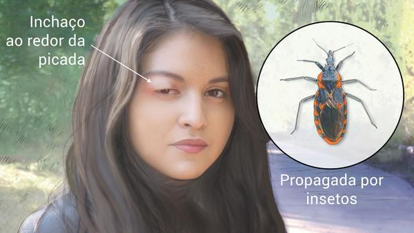

O que é?
Doença de Chagas
A Doença de Chagas, também conhecida como tripanossomíase americana, é uma doença parasitária causada pelo protozoário Trypanosoma cruzi. Essa doença é endêmica em partes da América Latina, onde é transmitida principalmente por insetos vetores conhecidos como "barbeiros" (Triatoma infestans, Rhodnius prolixus, entre outros). A doença pode ser transmitida de diversas formas, como por meio da picada do inseto, transfusão de sangue contaminado, transmissão de mãe para filho durante a gravidez, ingestão de alimentos contaminados ou por acidentes laboratoriais.
A Doença de Chagas pode apresentar duas fases distintas: aguda e crônica. Fase Aguda: Nos estágios iniciais da infecção (que podem durar de semanas a meses), os sintomas são geralmente leves e inespecíficos, tornando o diagnóstico desafiador. Os sintomas podem incluir febre, inchaço nos olhos ou ao redor deles (chamado de "sinal de Romaña"), fadiga, dor de cabeça, dor muscular e inchaço de gânglios linfáticos. Em alguns casos, a infecção pode ser grave, causando inflamação do coração (miocardite) ou do sistema digestivo (megacólon ou megaesôfago).
Fase Crônica: Após a fase aguda, a maioria das pessoas entra na fase crônica, que pode ser assintomática por muitos anos. No entanto, a doença pode progredir, afetando órgãos vitais, como o coração e o sistema digestivo. Os sintomas crônicos incluem palpitações cardíacas, arritmias, dificuldades de deglutição, distúrbios gastrointestinais e fraqueza geral. Complicações cardíacas e gastrointestinais podem levar a problemas graves de saúde, como insuficiência cardíaca e distúrbios da deglutição.
- Cardiopatia Chagásica
- Megacólon e Megaesôfago
- Arritmias Cardíacas
- Tromboembolismo
- Infecção de Órgãos Transplantados
Complicações que a doença de Chagas pode causar
Sintomas
- Inchaço
- Febre
- Inchaço nos olhos
- Dor de cabeça
- Problemas cardíacos
- Problemas gastrointestinais
- Fadiga e fraqueza
Os sintomas da malária podem variar, mas geralmente incluem:
Os quatro primeiros sintomas são recorrentes a malária em fase aguda, enquanto que os últimos são presentes na fase crônica da doença.
Fonte: Ministério da Saúde
Tratamento
tratamento da Doença de Chagas visa eliminar o parasita e controlar os sintomas, especialmente na fase aguda. O benzonidazol e o nifurtimox são medicamentos antiparasitários usados no tratamento.
No entanto, o tratamento é mais eficaz quando iniciado precocemente, na fase aguda da doença. A eficácia do tratamento é limitada na fase crônica, onde o foco está em gerenciar os sintomas e complicações associadas.
Fonte: Ministério da Saúde
Prevenção
Controle do vetor
uso de inseticidas contra o barbeiro
Medidas de higiene
lavar as mãos e os objetos